Nathan
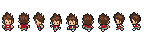
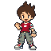
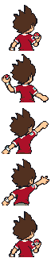
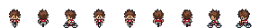
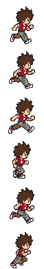
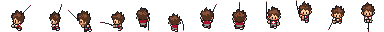
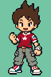
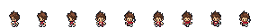
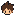
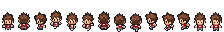
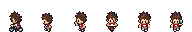
40 ensembles de personnages, créatures de carte et objets ; 151 Yo-kai de combat. Ressources existantes, sans redessin. Leur présence ici ne garantit pas que tous leurs événements sont déjà jouables.
Personnages · Feuilles et variantes · 151 Yo-kai
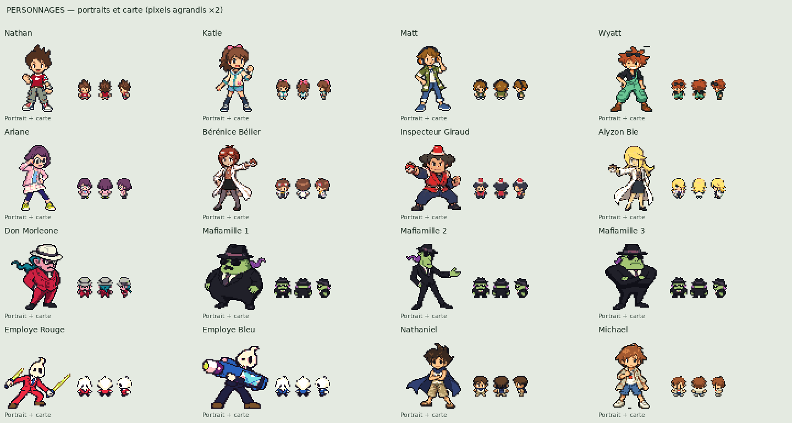
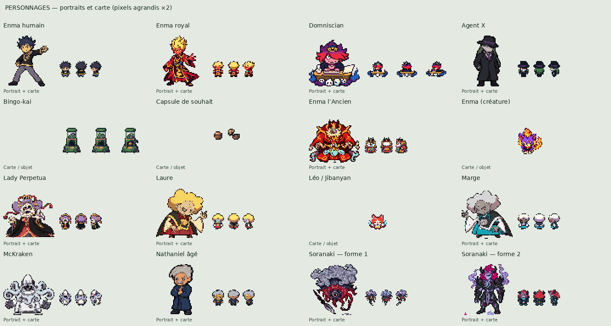
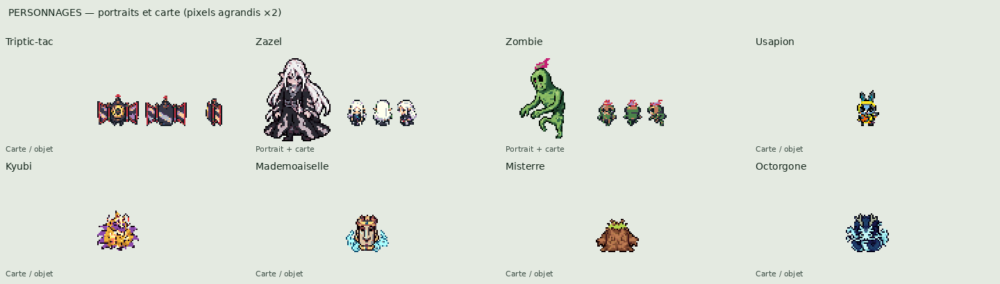
Les feuilles montrent les poses disponibles dans les PNG sources. Les planches ci-dessus appliquent aussi les dérivés de présentation de Léo et Usapion. Les portraits de Soranaki sont les aperçus 64×64 ; ses maîtres 128×128 sont accessibles ci-dessous. Les textures de combat ne reproduisent pas les transformations matérielles du moteur.











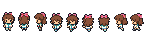
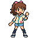
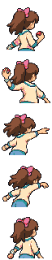
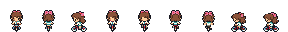
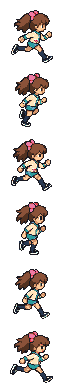
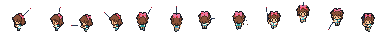
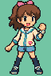
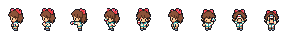
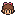
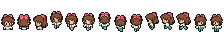
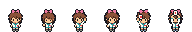
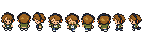
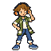
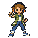
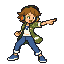
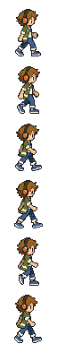
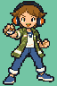
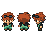
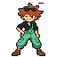
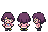
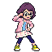
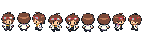
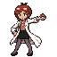
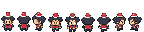
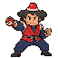
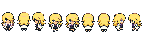
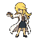
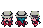
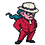

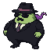

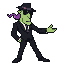
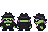
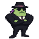
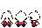
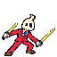
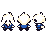
Textures de présentation sélectionnées par le registre actif de compilation, décodées avec leurs palettes GBA. Pas une capture d’un combat ni une validation artistique.